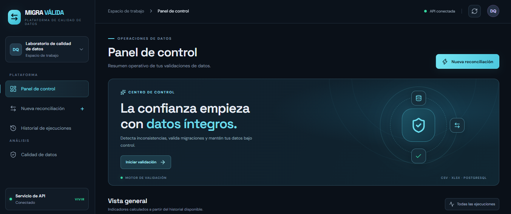

Calidad y confiabilidad
Validación de datos, reconciliación de información y pruebas para identificar inconsistencias.
Soy Jonathan Jiménez Escobar, ingeniero de sistemas enfocado en calidad de datos, automatización, desarrollo backend y soluciones tecnológicas útiles.
Proyectos personales · Aprendizaje continuo · Soluciones verificables
01 class Solution:
02 def build(self):
03 problem = "real"
04 data = validate()
05 result = automate(data)
06 return result
07 # Build. Test. Improve.
Me interesa crear herramientas que ayuden a resolver problemas concretos, mejorar procesos y convertir datos en información útil.
Validación de datos, reconciliación de información y pruebas para identificar inconsistencias.
Desarrollo de herramientas que reduzcan tareas manuales y hagan los procesos más repetibles.
Proyectos personales documentados para practicar, experimentar y demostrar habilidades técnicas.
Proyectos personales que muestran mi forma de resolver problemas y aprender con tecnología.

Herramienta de portafolio para comparar datos entre origen y destino, detectar registros faltantes o inesperados e identificar diferencias en campos. Incluye API y pruebas automatizadas.
Aplicación web de auditoría pasiva que permite revisar cabeceras HTTP relacionadas con la seguridad. Desarrollada como proyecto de aprendizaje y portafolio, con frontend web y API.
Proyecto de tecnología y ciberseguridad presentado mediante una aplicación web publicada. Explora la propuesta AI Shield y permite conocer la experiencia disponible en la demo.
Proyecto de exploración de análisis inteligente y detección de señales relevantes. Documentaremos el problema específico, las funciones y la demo después de revisar la versión disponible.
Concepto de experiencia inmersiva que explora inteligencia artificial, hologramas y realidad aumentada. Se definirán una demostración y una experiencia funcional antes de anunciar su publicación.
Espacio de contenido y recursos sobre ciberseguridad, scripts, automatización y desarrollo. Revisaremos sus contenidos y presentación antes de incluirlo como proyecto terminado.
Herramienta relacionada con la búsqueda de recursos JavaScript históricos. Verificaremos el repositorio, las instrucciones de uso y los resultados reproducibles antes de publicar una demo.
Proyecto de investigación de seguridad cuyo alcance, uso autorizado, documentación y resultados deben revisarse antes de describir sus capacidades públicamente.
Las fichas se irán ampliando con páginas individuales, capturas auténticas, documentación y demos verificadas. Los estados reflejan lo que falta por revisar, no una afirmación de que todos los proyectos estén terminados.
Herramientas aplicadas en distintos proyectos personales. La selección se ampliará según las tecnologías verificadas de cada proyecto.
Backend y automatización
Sitio oficial ↗Bases de datos relacionales
Sitio oficial ↗Construcción de APIs
Sitio oficial ↗Interfaces de usuario
Sitio oficial ↗Pruebas automatizadas
Sitio oficial ↗Desarrollo web
Documentación ↗Control de versiones
Mi perfil ↗Una sección para reunir estudios, cursos, certificados y credenciales verificables.
ingeniero en sistemas · Año de graduación previsto: , sujeto a confirmación del título.
Incluiremos los datos definitivos de la institución y los soportes correspondientes al organizar tus certificados.
Prepararemos un catálogo con nombre del curso, institución, fecha, habilidades adquiridas e imagen o enlace de validación. Solo se publicarán credenciales que podamos comprobar.
Perfiles para conocer mis proyectos, aprendizaje y actividad profesional.
Estoy interesado en oportunidades junior, colaboración en proyectos y retos relacionados con QA de datos, automatización y desarrollo backend.
Conectar en LinkedIn ↗